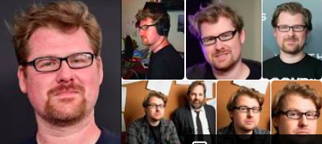

Марк Джастін Ройланд — американський актор, мультиплікатор, сценарист, продюсер, режисер і комік. Також озвучує окремих героїв анімаційнийх телесеріалів. Став відомий через створення мультсеріалу «Рік та Морті».

- Народження: 21 лютого 1980 р. (41 рік), Стоктон, Каліфорнія, США
- Зріст: 1,78 м
- Освіта: Auditorium Box Office, Modesto Junior College, Manteca High School, Sierra High School
- Книги: Tiny Rick, The Art of Rick and Morty